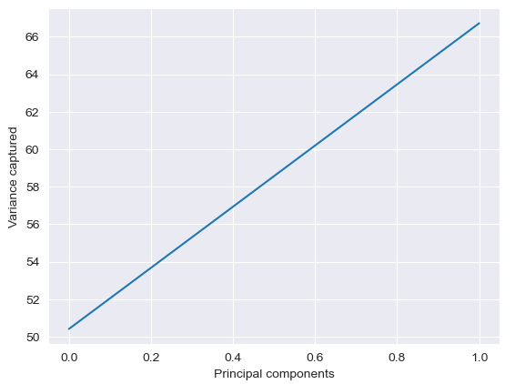

Here we demonstrate how to use the inbuilt function PCA() in the sklearn.decomposition package.
We start by reading in a data file that contains 5 dimensions or features, download this CSV, add it to your data store and rename it. As with the previous example, we normalise the data, perform PCA and measure the reconstruction error in the recovered data.
Lets begin by reading the given data.
# Read the data
import pandas as pd
data = pd.read_csv('data/train_wbcd.csv').dropna()
The output would look like this:
(98,32)
Our data consists of 98 data points and 32 dimensions (features). Next step is to normalise the data. We use the inbuilt function called scale() function from sklearn.preprocessing to do this.
#normalize our data
data_norm=data.copy()
mu = data_norm.iloc[:,2:].mean(axis=0) # mean of each col
sigma = data_norm.iloc[:,2:].std(axis=0) # std dev of each col
data_norm.iloc[:,2:]=(data_norm.iloc[:,2:]-mu)/sigma
We use the inbuilt function to perform PCA. Here, n_components specify the number of principal components to use. We start by using all the principal components.
#perform PCA using sklearn PCA implementation
from sklearn.decomposition import PCA
pca = PCA(n_components=2)
Xnorm=data_norm.iloc[:,2:].copy().values
pca.fit(Xnorm)
To put it differently, how can we choose the number of principal components to retain? We can decide this by looking the variance captured by each principle component.
#The amount of variance that each PC explains
#The amount of variance that each PC explains
var= pca.explained_variance_ratio_
print(var)
The output would look like this:
[0.50414964 0.16306662]
Here, we see that the first component captures around 50.41% variance, second component captures around 16.31%
variance and so on. To make it much easier, we can calculate the cumulative variance:
#Cumulative Variance explains
var1=np.cumsum(np.round(pca.explained_variance_ratio_, decimals=4)*100)
print(var1)
plt.plot(var1)
plt.xlabel("Principal components")
plt.ylabel("Variance captured")
The output would look like this:
[50.41 66.72]
Text(0, 0.5, 'Variance captured')

So, if k is the number of principal components, we see that captures around 50.41% variance, (the first components together) capture around 66.72% variance and so on. Since captures more than 60% variance in our data, lets add the third component.
pca = PCA(n_components=3)
Zred = pca.fit_transform(Xnorm)
print(Zred.shape)
The output would look like this:
(98,3)
We can recreate our original data (Xrec) from the reduced data (Zred) using the inverse_transform() function, and calculate the reconstruction error as before.
# Reconstruct our data
Xrec = pca.inverse_transform(Zred)
print(Xrec.shape)
The output would look like this:
(98, 30)
# Measure the reconstruction error
rec_error = np.linalg.norm(Xnorm-Xrec, 'fro')/np.linalg.norm(Xnorm, 'fro')
print(rec_error)
The output would look like this:
0.4859375839859015
Let us see how dropping the dimensionality of data affects the reconstruction error. We perform PCA using increasing number of principal components, and measure the reconstruction error in each case.
# vary principal components from 1 to 5
n_comp = range(1,nDims+1)
print(n_comp)
The output would look like this:
[1 to 31]
# Initialize vector of rec_error
rec_error = np.zeros(len(n_comp)+1)
for k in n_comp:
pca = PCA(n_components=k)
Zred = pca.fit_transform(Xnorm)
Xrec = pca.inverse_transform(Zred)
rec_error[k] = np.linalg.norm(Xnorm-Xrec, 'fro')/np.linalg.norm(Xnorm, 'fro')
# print("k={}, rec_error={}".format(k, rec_error[k]))
rec_error = rec_error[1:] #we started recording from index 1, so drop index 0
#Visualize the change in error
plt.plot(n_comp,rec_error)
plt.xlabel('No of principal components (k)')
plt.ylabel('Reconstruction Error')
The output would look like this:
k=1, rec_error=0.7041664292871995
k=2, rec_error=0.5768741133033028
k=3, rec_error=0.4859375839859015
k=4, rec_error=0.42116146026231194
k=5, rec_error=0.36045374675457575
k=6, rec_error=0.30913128269060297
k=7, rec_error=0.27125793238867757
k=8, rec_error=0.23850958714153778
k=9, rec_error=0.20993574805189139
k=10, rec_error=0.18009067168555537
k=11, rec_error=0.15895469219138864
k=12, rec_error=0.14204872660421053
k=13, rec_error=0.12491660595890769
k=14, rec_error=0.10762651261855655
k=15, rec_error=0.09293005293332164
k=16, rec_error=0.08154504058386751
k=17, rec_error=0.07229131841987832
k=18, rec_error=0.06475153142280245
k=19, rec_error=0.05717366047807598
k=20, rec_error=0.04920331546237984
k=21, rec_error=0.0414355944971561
k=22, rec_error=0.03500391231126629
k=23, rec_error=0.029208658945960503
k=24, rec_error=0.023546878335901463
k=25, rec_error=0.01776517524045024
k=26, rec_error=0.012569695037471464
k=27, rec_error=0.005900246502294497
k=28, rec_error=0.003314694313492582
k=29, rec_error=0.0014227150677471412
k=30, rec_error=9.424658158893498e-16
Text(0, 0.5, 'Reconstruction Error')

You are now be able to understand:
Make sure that you have experimented with all the individual Python coding examples that we have in this lesson, and that you are confident in how they work.
For consolidating your idea, download one of the publicly available data sets here and practice.